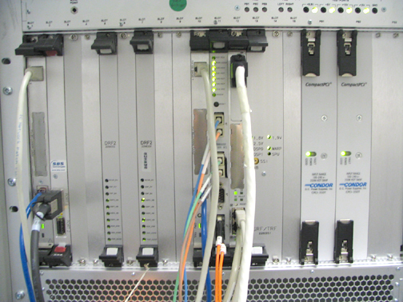
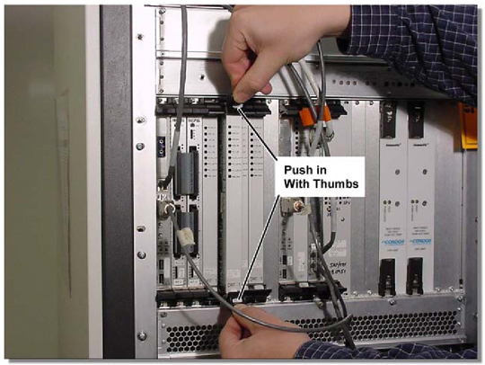
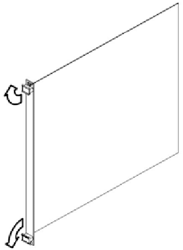
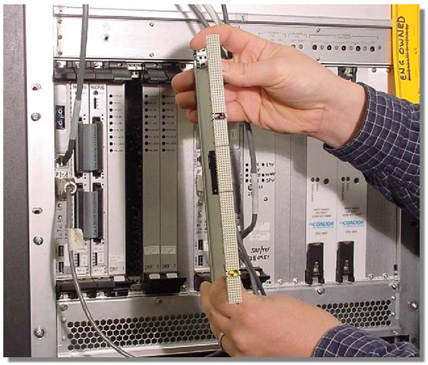
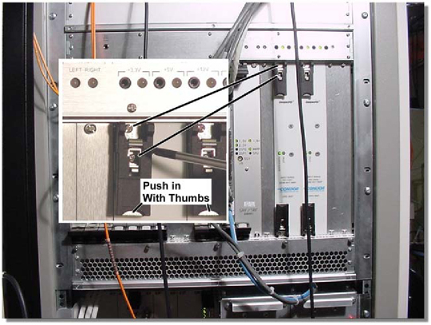
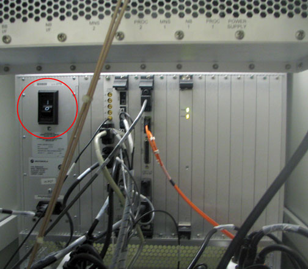
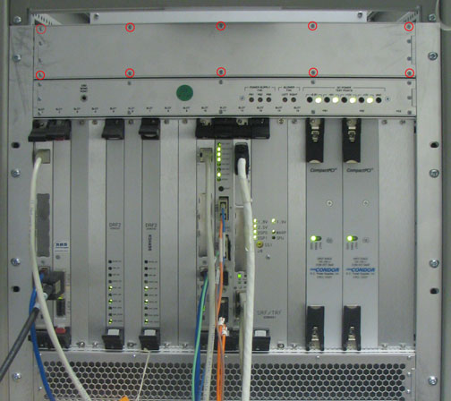

Operating Documentation
Direction 5440001-3, Rev# 6
Signa HDxt Service Methods
Module Version 2.0, Version Date 12/14/09
Operating Documentation |
| Required Persons | Preliminary Reqs | Procedure | Finalization |
|---|---|---|---|
| 1 | Not Applicable | Not Applicable | Not Applicable |
The MGD Chassis (see Illustration 1 and Illustration 2) houses the circuit boards for the pulse generation and image acquisition subsystems. These boards can be easily accessed from the front and back of the cabinet. The following removal and insertion procedures are applicable for all the types of circuit boards located within the card rack. The following topics are found in this section:
| ||||
| Electrocution Hazard! | ||||
| Dangerous voltages exist inside the systems cabinet when energized. | ||||
| Refer to Systems Cabinet Lock Out / Tag Out |
| ||||
| Prior to powering down the entire Systems Cabinet, boot the Applications software to the root level. The VRE System, that resides in the Systems Cabinet, can become corrupted if it looses power when Applications software is active. | ||||
Power Down the Systems Cabinet:
At the Host Computer, right-click and select [Service Tools] > [System Restart]. Power down the Systems Cabinet when the login GUI displays.
Refer to Illustration 1, Illustration 2 and their accompanying tables for circuit board parts identification.
Illustration 1: MGD Chassis - Front View

| Slot(s) Number | Board Name | Reference |
|---|---|---|
| 1 | APS (Acquisition Processing Subsystem) | Illustration 1 |
| 2 | Infinaband | |
| 4-7 | DRFI (Digital Receive Filter 1) | |
| 10 | AGP (Application Gateway Processor) | |
| 11 | IRF (Interface and Remote Functions) | |
| 12 | SCP (Scan Control Processor) | |
| 13/14 | SRF/TRF (Sequence Related Functions/ Trigger and Rotational Functions) | |
| PS1, PS2 | Power Supply Modules |
Illustration 2: MGD Chassis - Rear View

| Slot(s) Number | Board Name | Reference |
|---|---|---|
| 8 | Bridge Board | Illustration 2 |
| 11 | IRF I/O (Interface and Remote Functions Input/Output) | |
| 13/14 | STIF (SRF/TRF Interface) | |
| N/A | AC Input Module |
Circuit Board Removal/Replacement:
Attach a grounding wrist strap.
Where applicable, remove the fiber-optic cables (PCI Card, 10/100 BaseT, Com1, etc.) from the face of the board.
Loosen the two faceplate holding screws (one located at the top and bottom of the faceplate). These screws are captive to the faceplate, and do not need to be completely removed.
Using your thumbs, push in the grey release tabs (Illustration 3), and gently pull out the extractor tabs located on the top and bottom of the circuit board. Refer to Illustration 4 for the proper direction.
| NOTE: | The APS, AGP, SCP, and Bridge boards do not have release tabs. The lever action of the ejectors will disengage the circuit board connections from the chassis. |
Illustration 3: Faceplate Release Tabs

Illustration 4: Faceplate Ejector Action

Slide the circuit board all the way out of the card cage, being careful not to bend or bind the card in any way.
| NOTE: | The circuit board should be handled using only the faceplate, ejectors, and the edges of the board. |
Place the card in an appropriate shipping package, or discard if applicable.
| NOTE: | Reverse the above process for Circuit Board installation. |
| ||||
| Possible Equipment Damage! | ||||
| Extreme caution should be exercised when removing and replacing circuit boards. All boards that have female connectors (shown in Illustration 5) must be carefully disengaged, then re-engaged to the male pins located on the backplane chassis. | ||||
| If any of the pins are damaged, the entire chassis will need to be replaced. |
Gently engage the circuit board connectors with the backplane. If it does not feel like the circuit board is properly engaging the backplane, remove the board and check the connectors for bent or broken pins.
Illustration 5: Board Connections

| ||||
| Do NOT attempt to use anything other than the ejectors to insert or remove the board from the chassis. | ||||
Once the board ejectors contact the MGD chassis faceplate, gently push the ejectors in to the center of the board. This action will cause the ejectors to insert the board into the chassis.
Tighten, but do not overtighten, the faceplate holding screws to secure the circuit board to the card rack.
Where applicable, re-attach the cables to the face of the board.
Restore power to the Systems Cabinet, and bring the Host Computer back up to scanning level.
Refer to Step for check out and proper operation.
| ||||
| Prior to powering down the entire Systems Cabinet, boot the Applications software to the root level. The VRE System, that resides in the Systems Cabinet, can become corrupted if it looses power when Applications software is active. | ||||
Power Down the Systems Cabinet:
At the Host Computer, right-click and select [Service Tools] > [System Restart].
Power down the Systems Cabinet when the login GUI displays.
Power Supply Module Removal/Replacement:
Attach a grounding wrist strap.
Loosen the 4 faceplate holding screws (two located at the top and bottom of the faceplate shown in Illustration 6). These screws are captive to the faceplate and do not need to be completely removed.
Illustration 6: Power Supply Faceplate Holding Screws

Using your thumbs, push in and gently pull the extractor tabs located on the top and bottom of the circuit board. (See Illustration 4 for proper direction.) The lever action of the ejectors will disengage the supply module connections from the chassis.
Slide the power supply module all the way out of the card cage.
| NOTE: | The module should be handled using only the faceplate, ejectors, and the edges of the module. |
Place the module in an appropriate shipping package.
| NOTE: | Reverse the above process for Power Supply Module installation. |
| ||||
| Possible Equipment Damage! | ||||
| Extreme caution should be exercised when removing and replacing circuit boards and power modules. All boards and modules that have female connectors (shown in Illustration 5), must be carefully disengaged, and re-engaged to the male pins located on the backplane chassis. | ||||
| If any of the pins are damaged, the entire chassis will need to be replaced. |
Remove the packing material from the replacement module, and gently slide the module into the chassis.
Use the ejectors to insert the board into the chassis.
Tighten, but do not overtighten, the faceplate holding screws to secure the power supply module to the card rack.
Restore power to the Systems Cabinet, and bring the Host Computer back up to scanning level.
Refer to Step for final check out steps.
Turn off MGD Chassis. (Refer to Illustration 7.)
Illustration 7: Rear MGD Chassis Power Switch

On the front of the MGD Chassis, remove the 10 screws (shown below) that secure the Chassis Fan cover.
Illustration 8: MGD Chassis Fan Cover

Pull out the defective fan(s). Since the fan is plug and play with no cables, it can be removed or installed with ease.
Illustration 9: Removing Defective Fan

Slide the new fan (2294300-7) into the same slot from which the defective fan was removed, and push the fan back until it is snug.
| NOTE: | The fan's connector should automatically align itself to the chassis plug. |
Reattach the Chassis Fan cover. (See Illustration 8.)
Turn on the MGD Chassis. (Refer to Illustration 7.)
| ||||
| Prior to powering down the entire Systems Cabinet, boot the Applications software to Root level. The VRE System which resides in the Systems Cabinet can become corrupted if it looses power when Applications software is active. | ||||
Power down the Systems Cabinet:
At the Host Computer, right-click and select [Service Tools] > [System Restart].
Power down the Systems Cabinet when the login GUI displays.
| ||||
| The MGD chassis weighs about 35 lbs. (17.7 kg) when empty. | ||||
MGD Chassis Removal/Replacement Procedure:
Attach a grounding wrist strap.
Remove all boards and store them in a static-safe location. Refer to Step for removal instructions.
Remove the Power Supply Module as explained in Step .
Remove the six screws that hold the MGD Chassis to the cabinet frame.
Slide the MGD Chassis out of the Systems Cabinet.
| NOTE: | Reverse the above process for MGD Chassis installation. |
Restore power to the Systems Cabinet, and bring the Host Computer back up to scanning level.
Reset TPS to ensure the system will download.
Run Quick Diagnostics (15 minutes) to verify operations.
Run one Head or Body scan.